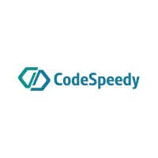
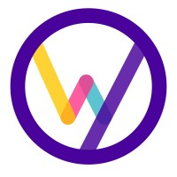

Dev Milan Mehta
Machine Learning Engineer with over
2 years of demonstrated experience spearheading initiatives in
Machine Learning & NLP (Large Language Models - LLMs).
Currently building the AI Platform at
Toyota North America.
About Me

Hello! I’m Dev Milan Mehta
I am passionate about Machine Learning, Natural Language Processing, and developing intelligent systems to solve complex problems. With a strong foundation in data science, I love working at the intersection of technology and innovation.
Currently, I am exploring AI for social impact and graph-based machine learning.
- Experienced in developing predictive models, building robust algorithms, and conducting research in disruptive event detection and community analysis on social networks.
- Proficient in Python, TensorFlow, PyTorch, and other ML frameworks. Strong understanding of statistical modeling and data visualization techniques.
- Published research in top international conferences, including work on tweet classification, community detection, and keyword extraction models. (View publication).
- Actively seeking opportunities to collaborate on impactful AI projects and leverage my skills to tackle real-world challenges.
Work Experience

Toyota
Machine Learning Engineer
- Saved $2M annually in cleaning costs by implementing and evaluating Random Forest, XGBoost, Neural Network, and LSTM to predict weld spatter and strength with 97% accuracy. Enhanced safety by automating strength checks for all welds, replacing limited manual inspections.
November 2024 - Present
Huro AI
AI & NLP Engineer
- Hired and led a cross-functional team of five engineers, managing all aspects of the project lifecycle, from data collection to model deployment and frontend integration, delivering a seamless end-to-end user experience.
- Improved WER by 25% for transcription and translation of multilingual audio data by fine-tuning state-of-the-art LLM models like OpenAI's Whisper and Seamless.
- Reduced processing time from 3 seconds to 0.3 seconds by developing and deploying an end-to-end real-time multilingual audio translation system on GCP, and demoed at Gitex Dubai.
- Developed custom Python scripts to automate the collection of audio and transcripts from YouTube, identifying and rectifying recurring issues such as duplicated text and unwanted audio lyrics. Leveraged data cleaning processes to ensure high-quality, accurate inputs for model training.
- Performed data processing by clipping audio to 30-second segments and aligning with transcripts to create a dataset dictionary containing paths to clipped audio, segmented transcripts, and language metadata for fine-tuning.
July 2024 - October 2024
StreetMetrics
Data Scientist
- Conducted target market studies for multiple clients, analyzing audience distribution by zip and city to provide geographic ad reach insights and guide ad placements for reaching target audiences.
- Boosted client confidence by 85% via rigorous ground truth studies, enhancing ad insights by aligning impressions with actual attendance.
- Saved 40 hours weekly by creating and deploying an automated data collection pipeline on AWS Lambda, delivering crucial audience demographics and eliminating manual API calls to third-party services, enabling team focus on higher-value tasks.
- Designed and implemented interactive Streamlit dashboards that visualized key audience demographics, including average distribution, affinity, and in-market versus out-of-market breakdowns. These dashboards enabled users to query specific cities and date ranges, with real-time backend SQL querying to display relevant insights through tables and graphs.
January 2024 - April 2024

University of Illinois at Chicago
Data Scientist Teaching Assistant
- Designed course curriculum, createed instructional materials, and instructed/assessed up to 100 students in diverse classroom environments.
January 2023 - December 2023
National Institute of Technology, Jaipur
Deep Learning Research Intern
- Enhanced Lung Cancer Detection accuracy from 84% to 94% by implementing a YOLOv3-inspired model architecture.
March 2021 - June 2022

CodeSpeedy
Deep Learning Intern
- Implemented a sentiment analysis system for a theater company, training scikit-learn models to classify feedback into 5 sentiment levels from negative to positive.
- Designed an English-to-French translation system for a travel company, incorporating a seq2seq approach for sentence tokenization and implementing an LSTM model with Tensorflow and Keras.
- Built a Traffic Sign Classification System using Tensorflow and Keras for a driving institute, achieving 95% accuracy and bolstering traffic sign recognition capabilities for driver training.
- Created an Image Noise Reducer employing auto-encoders, elevating classification accuracy from 26% to 84% for a security firm.
April 2021 - June 2021

Widhya
Artificial Intelligence Intern
- Employed CountVectorizer and cosine similarity to construct a movie recommendation system, conducting comprehensive movie similarity assessment via genre and keyword-based feature analysis for a movie ticketing company.
- Developed a Flight Delay Prediction model for a tourism company using a Decision Tree Classifier, achieving an accuracy of 88%.
January 2021 - February 2021
Publications
Disruptive Event Identification in Online Social Network
A Seetha, S S Chouhan, S Soni, Dev Milan Mehta, & Vinush Vishwanath
International Symposium on Methodologies for Intelligent Systems 2022
- Developed a disruptive event tweet classifier with 98.9% accuracy and a community detection model achieving 77.2% NMI to group related tweets. Implemented keyword extraction with 98% accuracy and 93% NMI to name events, evaluated relevance with Precision@K and NDCG (0.9). Published disruptive event dataset. (https://arxiv.org/abs/2111.15629).
Education

University of Illinois at Chicago (UIC)
Master of Science in Computer Science
Specialization in Machine Learning & Data Science
GPA 3.88/4.0
Coursework Highlights
- Introduction to Machine Learning
- Introduction to Data Science
- Natural Language Processing
- Computer Vision
- Neural Networks
- Advanced Machine Learning
- Machine Learning for Graphs
- Statistical Natural Language Processing
- Deep Learning for Computer Vision
National Institute of Technology, Jaipur (MNIT)
Bachelor of Technology in Computer Science and Engineering
GPA 7.48/10.0
Coursework Highlights
- Machine Learning
- Deep Learning
- AI & Expert Systems
- DSA
- Object-Oriented Analysis and Design


Technical Skills
Programming Languages
Python, SQL, C, C++, Java, JavaScript, HTML, CSS
NLP & Machine Learning
PyTorch, Tensorflow, SciKit Learn, Keras, Numpy, Pandas, Matplotlib, Flask, Streamlit, Seaborn, NLTK, Langchain, SpaCy, HuggingFace Transformers

Model Deployment & CI/CD
MLOps (MLFlow, WANDB), CI/CD (Docker, Kubernetes, Kubeflow, Metaflow, GitHub Actions, Terraform, Jenkins)
Data Engineering and Monitoring
Snowflake, PostgreSQL, Apache Spark, PySpark, MongoDB, Hadoop, Kafka, Grafana

Frameworks & Technologies
Linux, Git, RESTful APIs, Flask, AWS (Lambda, EC2, SageMaker, S3), GCP, Airflow, Visual Studio, Jira, Jupyter Notebook
Get In Touch